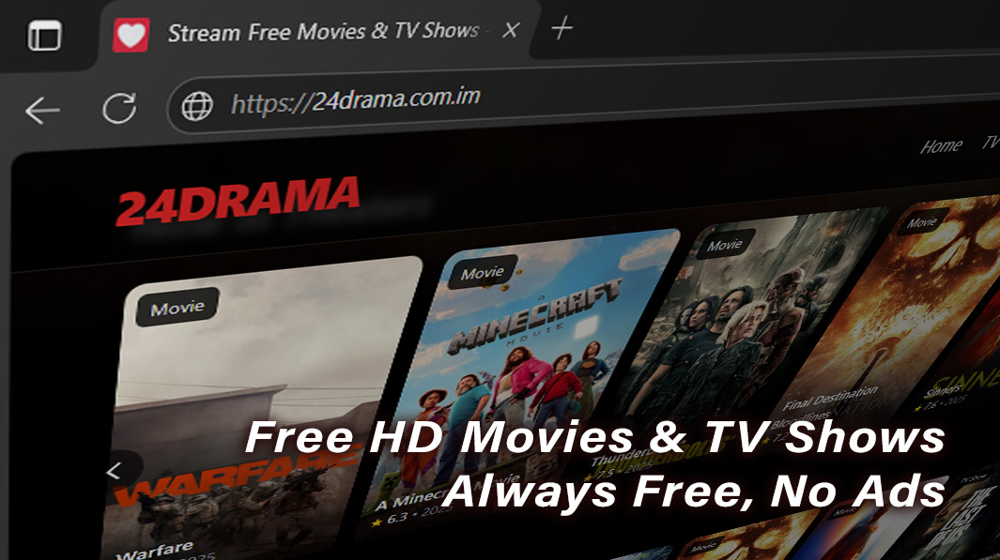

24DRAMA - Stream Free Movies & TV Shows
In a world where binge-watching has become an art, 24drama stands out as your go-to destination for free full episodes and unmissable series. Whether you’re a seasoned fan hunting for hidden gems or new to the marathon mindset, this guide unpacks everything you need to know to make every episode count.

Why 24drama Is the Ultimate Streaming Hub
Let’s face it: finding reliable, high-quality drama series without breaking the bank feels like chasing a unicorn. Enter 24drama.com and its sister sites — 24drama.to and dowatch24 — where you can watch 24 full episodes free online, anytime, anywhere. With a vast library that spans classics and fresh drops, 24drama offers a level of convenience that transforms casual viewers into die-hard fans.
Whether you prefer 24 drama series from Asia or the latest Channel 24 Drama originals, the platform’s intuitive design and minimal ads make it a top pick. And if you’re curious about how 24drama TV TikTok clips keep you in the loop, stick around—we’ve got you covered.
Free Full Episodes at Your Fingertips
No subscriptions, no paywalls—just pure drama. On 24drama.tv, every episode loads in seconds, letting you jump straight into the story. From heart-wrenching romance to pulse-pounding action, you get complete seasons without the hassle of hidden fees.
- Instant access: Click, play, and binge.
- Multiple servers: Never worry about downtime or buffering.
- Regular updates: New episodes appear within hours of airing abroad.
User-Friendly Interface & Smart Features
Have you ever been frustrated by a clunky streaming site? 24drama.to nips that problem in the bud with a clean layout, easy search filters, and personalized watchlists. You can:
- Search by genre, year, or even actor name.
- Create a “Continue Watching” queue for interrupted marathons.
- Enable subtitles in multiple languages with one click.
How to Maximize Your 24drama Experience
Ready to take your drama binges to the next level? Here are some insider tricks and tips to squeeze every drop of joy out of 24drama:
- Use ad-block wisely: A lightweight blocker can reduce pop-ups while leaving essential site functions intact.
- Bookmark favorite servers: Some load faster than others depending on your region.
- Engage with the community: Many episodes have comment sections where fans share subtitles, fixes, and Easter eggs.
- Leverage mobile apps: 24drama TV TikTok channels often link to mobile-friendly versions for on-the-go streaming.
- Follow social feeds: Official 24drama and fan pages on TikTok and Instagram drop sneak peeks and episode recaps.
Step-by-Step Guide to Accessing 24drama
- Open your browser and navigate to 24drama.com (or .tv/.to as preferred).
- Use the search bar to type your show name or browse through “Top Picks.”
- Click on the season you want—remember, 24 drama series Season 2 is often listed separately for quick access.
- Select an episode and choose the highest-quality server available.
- Disable any interfering ad-block pop-ups (if prompted).
- Hit “Play” and enjoy—with subtitles toggled on if needed.
- Bookmark the episode for later or add it to your watchlist.
- Share your favorite moments with friends via the built-in social share buttons.
Comparing Popular Streaming Alternatives
While 24drama excels at offering a free library, it’s worth seeing how it stacks up against other options:
| Feature | 24drama.com | Dowatch24 | Official OTT Platforms |
|---|---|---|---|
| Cost | Free | Free | Subscription Required |
| Episode Library | All Seasons & Specials | Selected Series Only | Wide, but Region-Locked |
| Ads | Minimal Pop-ups | Frequent Banners | None (Ad-Free) |
| Subtitles | Multiple Languages | English Only | Varies by Title |
Expert Insights on Streaming Trends
“With the shift toward cord-cutting, platforms like 24drama fulfill a real demand for accessible, on-demand drama series, especially in regions where official services lag behind,” says Dr. Minh Tran, a digital media strategist based in Ho Chi Minh City.
This reflects a broader movement: viewers crave flexibility and affordability. A recent survey found that 68% of drama fans rely on free streaming links at least once a month to catch up on their favorite shows.
“The savings are obvious, but what truly hooks users is the community aspect—followers share fan-made recaps, translation fixes, and even episode breakdowns on social media,” notes Professor Emily Carter, an expert in online fandom cultures.
24drama TV TikTok and Social Integration
If you thought TikTok was all dance challenges, think again. The 24drama TV TikTok channel has exploded with bite-sized episode highlights, fan theories, and reaction clips that drive new viewers straight to full-length episodes. Here’s how to stay connected:
- Follow @24drama_tv on TikTok for daily clips.
- Use hashtags like #24dramaSeries to discover trending discussions.
- Join Facebook and Discord communities for subtitle swaps and watch parties.
Season Highlights: 24 TV Series Season 2 & Beyond
Season 2 of many popular dramas often ramps up the stakes—and 24drama ensures you never miss a beat. From cliffhangers that keep you glued to your screen to character arcs that rival a soap opera, here’s what to watch for:
- Plot Twists Galore: Season 2 traditionally doubles down on suspense—perfect for those “just one more episode” nights.
- New Characters: Fresh faces mean new dynamics—watch out for surprise alliances and betrayals.
- Fan-Fav Episodes: Look for episodes tagged “must-watch” in the comments—they often feature the best moments.
Conclusion
There you have it—your road map to making the most of 24drama. From effortlessly streaming 24 full episodes free online to tapping into social buzz on 24drama TV TikTok, you’re now equipped to binge smarter, not harder. Ready to press play? Your next drama marathon awaits!
FAQ
1. Is 24drama.com legal and safe to use?
While 24drama operates in a gray area, using a reliable VPN and antivirus software can help protect your privacy and security when streaming free content.
2. How do I find 24drama TV Series Season 2?
Simply search for “Season 2” alongside your show name in the search bar, or browse the “Seasons” dropdown menu for a quick list of available seasons.
3. Can I watch on mobile via TikTok links?
Absolutely. The 24drama TV TikTok profile often shares direct links to mobile-optimized pages, making on-the-go streaming a breeze.
4. Why am I seeing ads on 24drama.to?
Ads help keep the service free. You can minimize interruptions by choosing servers labeled “Low-Ad” or using a light ad-blocker that allows essential scripts.
5. What if my favorite show isn’t listed?
Check out dowatch24 or switch domains between .com, .tv, and .to—some titles are exclusive to specific mirrors. Community forums also share user-uploaded subtitles and episode links.
6. How do I report broken links?
Use the “Report” button beneath the player or drop a note in the comment section. Dedicated moderators usually fix broken servers within hours.
7. Are there any premium features?
No subscription is needed. However, some fan clubs on Discord offer exclusive live-watch events and behind-the-scenes content for a small membership fee.